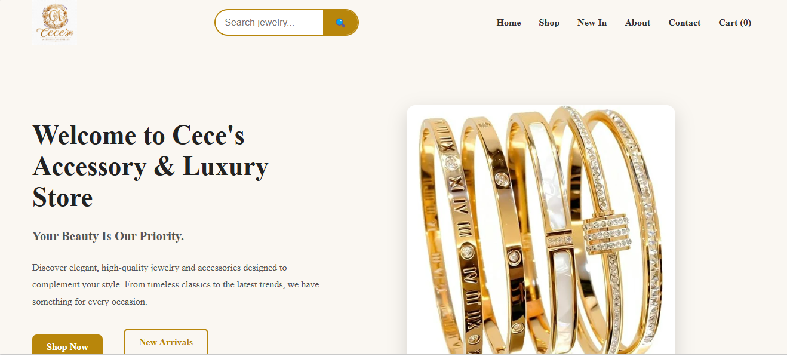
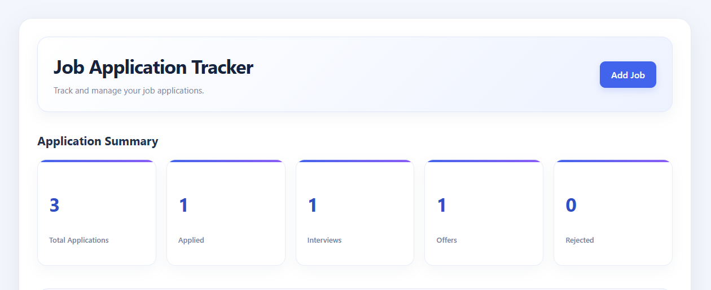
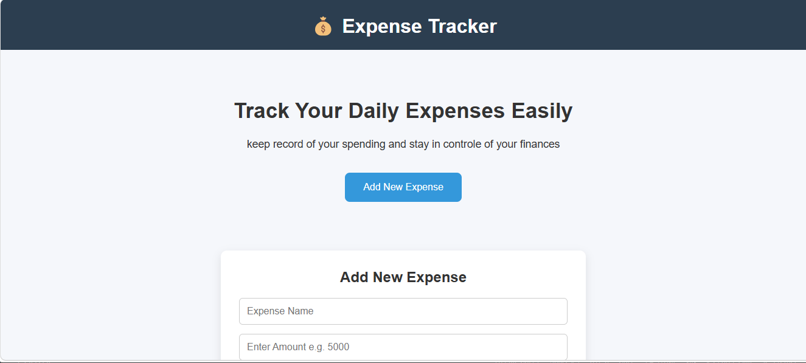

I build responsive web applications using HTML, CSS, JavaScript, Python, Flask, and SQL. Through hands-on projects and coursework, I develop practical solutions, integrate databases, and deploy applications that solve real-world problems.
ABOUT ME
I am a Computer Science student and aspiring software engineer with hands-on experience building and deploying web applications. Through my projects, I have worked on frontend interfaces, backend functionality, database integration, and application deployment.
I enjoy breaking down problems, learning how systems work, and turning ideas into practical solutions. I am continuously strengthening my software development skills through coursework and personal projects, and I look forward to contributing to real-world applications while growing as an engineer.
Bachelor's degree programme
In Progress · Expected August 2030Six-month training programme
In Progress · Expected April 2027MY SKILLS
MY PROJECTS
A selection of practical web applications I've developed while building my skills in web development.

A responsive e-commerce web application for an accessory and jewelry business. It features product browsing and uses browser Local Storage to manage client-side data. I am currently working on improving the application for production readiness.


A web application that allows users to record, categorize, and track their expenses through a simple interface. It uses Flask for backend functionality and PostgreSQL for persistent data storage, helping users keep their financial records organized.
GET IN TOUCH
I'm open to software development opportunities, collaborations, and projects where I can build practical web solutions, contribute my skills, and continue growing as a software engineer.